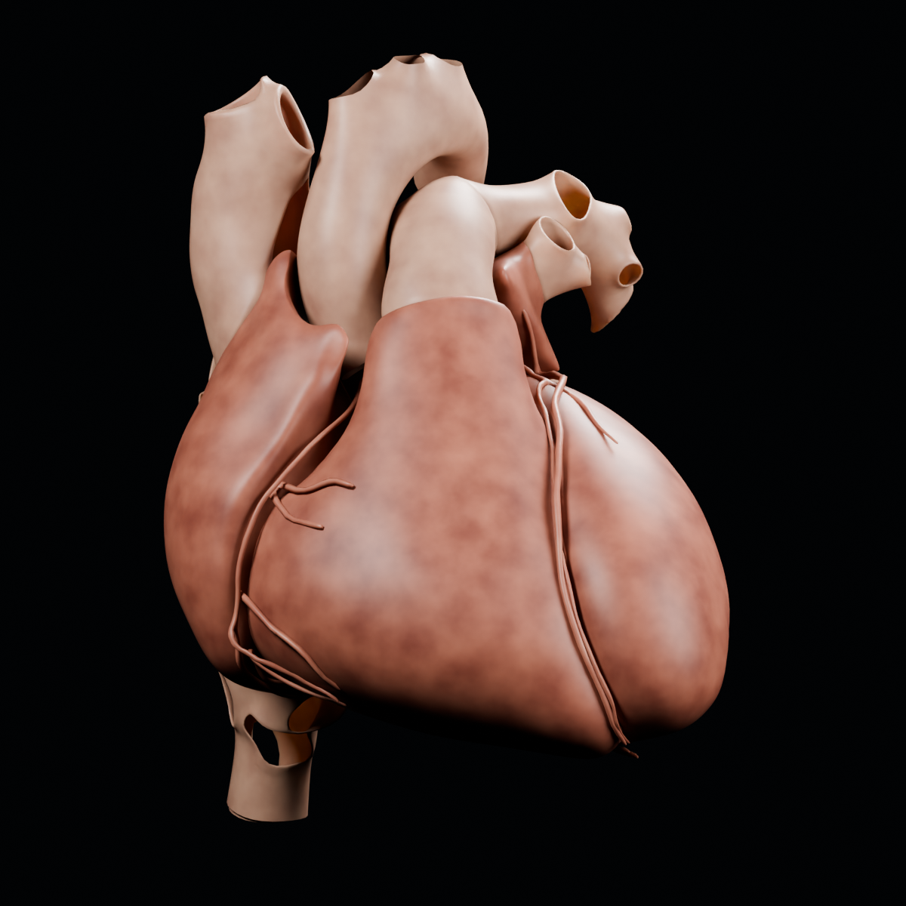
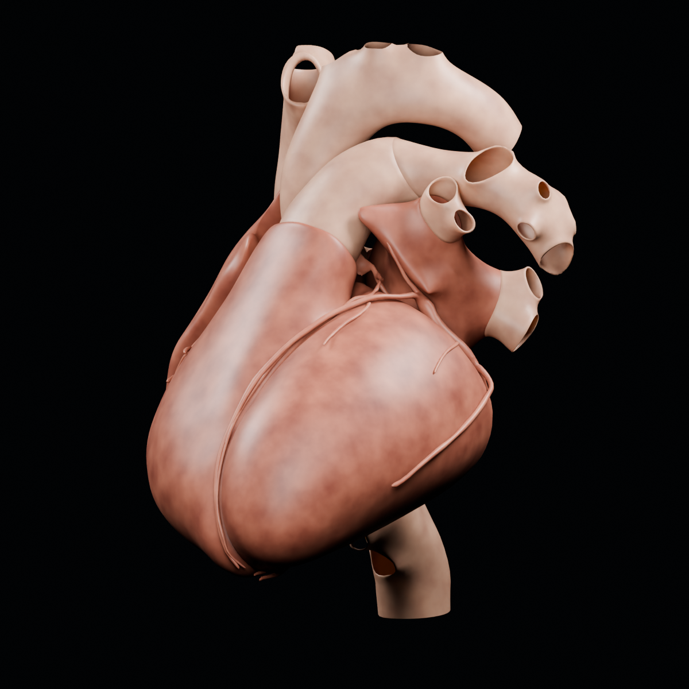
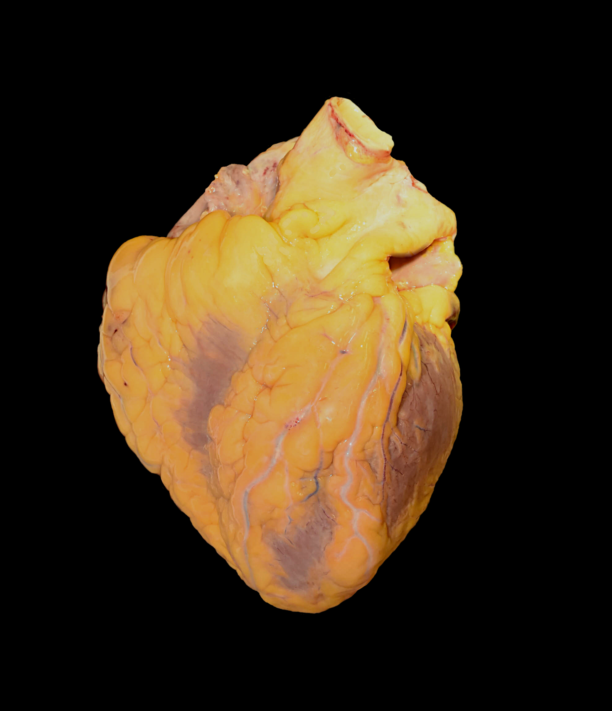

Heart: reference geometry and observed tissue
Two static illustrations retain the HRA male-heart mesh geometry. The separate autopsy photograph shows tissue appearance in another donor. These images serve different purposes.

The camera is slightly toward the subject’s left and superior. Anatomical orientation is inferred from source-named landmarks, not certified by version-specific axis documentation.

Same geometry, visibility and material. The changed camera reveals spatial relationships; it does not show heart motion.
Procedural color, roughness, micro-bump and subsurface scattering are illustrative choices, not measured tissue optics. No blue/red oxygenation code, artificial cutaway, reconstructed lumen, fat geometry or beating deformation was added. Open vessel ends, separate source patches and seams remain. No physical scale bar is asserted.
Geometry: Kristen Browne (2021), 3D Reference Organ for Heart, Male v1.0, HuBMAP; Visible Human Male data provided by the U.S. National Library of Medicine. CC BY 4.0. Adaptations: materials, smooth shading, cameras, lighting and object visibility; original vertex geometry and placement retained. Render provenance and visibility inventory.
Observed appearance: adult male heart at autopsy

Original photograph and author description · CC0 1.0 · original JPEG, unmodified · Photo provenance.
The photograph was inspected as a qualitative appearance comparator; it was not projected onto the mesh or used to infer hidden anatomy. The render is an anatomical illustration, not a photographic replica or clinical image.